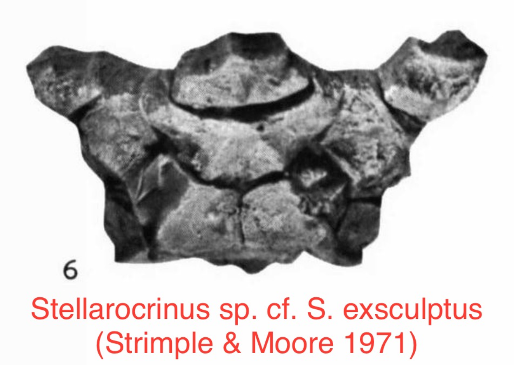
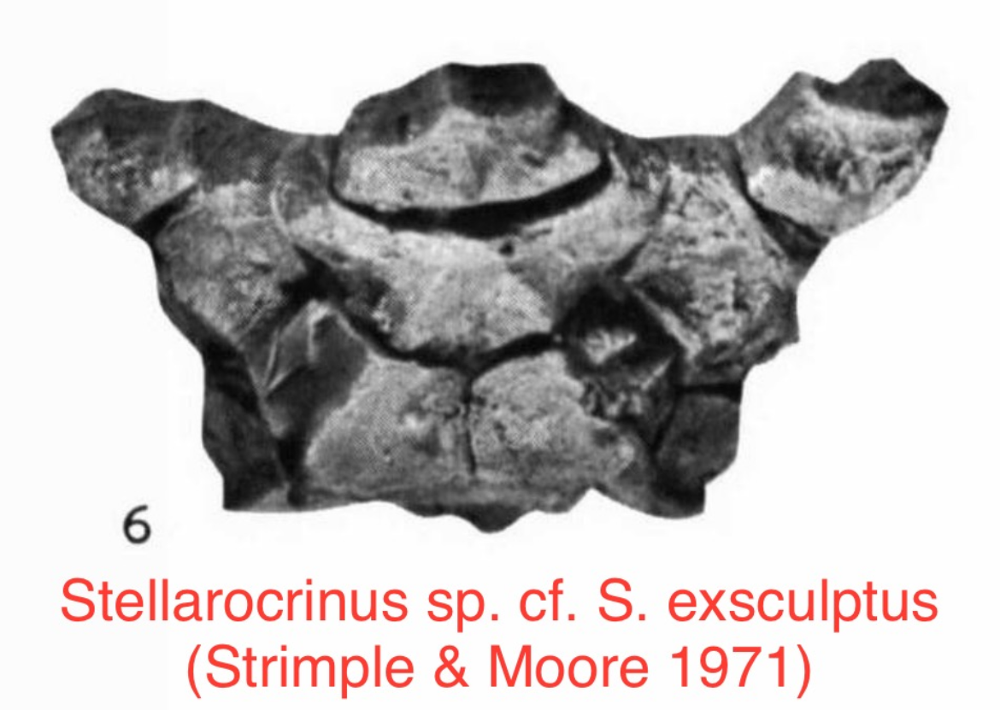

Stellarocrinus sp. cf. S. exsculptus
• Pennsylvanian
• Francis Shale
• "Brick Pit", Ada, Oklahoma, USA
Size: 2 cm across the arms
The characteristic low, bowl-shaped and ridged cup on this crinoid is unmistakable as the genus "Stellarocrinus", with the prominent spiny ornamentation being a notable feature. In Strimple's description of the Francis Shale fauna a single specimen of this genus was described: a cup with primaxils attached referred to as "Stellarocrinus sp. cf. S. exsculptus", comparing to "S. exsculptus" from the Wann Formation of Oklahoma (Strimple & Moore 1971). My specimen appears more-or-less consistent with the figured specimen, and the preserved secundibrachials here appear to be uniserial, in contrast to the typically biserial arms of most Stellarocrinus species.
 
